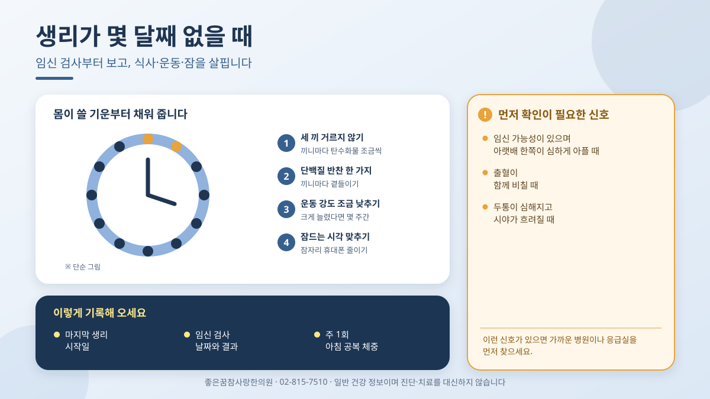

이종호 한의사 감수좋은꿈참사랑한의원 대표원장 (한의사 면허번호 19769)발행 2026-11-26 · 수정 2026-11-26
이 글의 차례
달력 앱을 열었는데 지난 생리 날짜가 한참 위에 있습니다. 손가락으로 화면을 몇 번이나 올려야 보일 만큼입니다. 처음에는 바빠서 늦나 보다 했는데, 한 달이 지나고 두 달이 지나도 소식이 없습니다. 몸은 그럭저럭 괜찮은 것 같은데, 괜찮다는 그 느낌이 오히려 더 마음에 걸립니다.
생리가 몇 달째 없는 상태를 의학에서는 무월경이라고 부릅니다. 원래 생리를 하던 분이 석 달 이상, 혹은 평소 주기의 세 배 넘게 생리가 없으면 한번 원인을 확인해 보자고 권하는 경우가 많습니다. 임신, 호르몬, 갑상선, 체중, 스트레스, 운동량 등 살펴볼 갈래가 여러 가지입니다.
진료실에서 "생리 안 하면 편하긴 한데, 괜찮은 거죠?" 하고 반쯤 웃으며 묻는 분이 계십니다. 그 마음도 이해합니다. 하지만 생리는 몸 전체의 리듬을 비추는 거울 같아서, 오래 멈춰 있다면 그 이유를 한번 들여다보는 편이 좋습니다. 이 글에서는 무엇을 먼저 확인하고, 한의원에서는 무엇을 함께 살피는지 차근차근 적어 보겠습니다.
왜 생리가 멈출까요
생리는 뇌의 시상하부와 뇌하수체, 난소, 자궁이 차례로 신호를 주고받으며 만들어집니다. 이 연결 가운데 어느 한 곳이라도 흔들리면 생리가 늦어지거나 멈출 수 있습니다. 그래서 무월경은 자궁만의 문제가 아니라 몸 전체의 신호로 보는 경우가 많습니다.
가장 먼저 떠올려야 할 것은 임신입니다. 피임을 하고 있었어도, 생리가 불규칙했어도 임신 가능성은 따로 확인하는 것이 순서입니다. 다음으로 갑상선 기능, 젖을 만드는 호르몬인 프로락틴, 다낭성 난소 증후군 같은 호르몬 쪽 원인을 살핍니다.
생활에서 오는 원인도 꽤 많습니다. 짧은 기간에 체중이 많이 빠졌거나, 식사량을 크게 줄였거나, 운동량이 갑자기 늘었거나, 큰 시험이나 이직, 이별 같은 긴장이 이어지면 뇌가 '지금은 생리를 쉬자'는 쪽으로 신호를 낮추기도 합니다.
한의학에서는 생리가 멈춘 상태를 경폐(經閉)라 부르며 오래전부터 살펴 왔습니다. 기운과 혈이 부족해 채워지지 않는 모습, 긴장과 막힘으로 흐름이 머문 모습, 몸이 차서 움직임이 더딘 모습 등으로 나누어 봅니다. 다만 이것은 검사로 원인을 확인한 뒤에 몸 상태를 함께 이해하는 틀입니다.
무월경, 이렇게 나눠 봅니다
같은 '생리가 없다'는 말이라도 상황에 따라 확인할 것이 다릅니다. 정확한 판단은 산부인과 진료를 따르시고, 여기서는 이해를 돕는 정도로만 나눠 보겠습니다.
원래 하던 생리가 멈춘 경우
평소 생리를 하던 분이 석 달 넘게 생리가 없다면 속발성 무월경이라고 부릅니다. 이 경우에는 임신 여부, 체중과 식사 변화, 운동, 스트레스, 복용 중인 약, 갑상선과 호르몬 수치를 차례로 확인합니다.
피임약을 끊은 뒤 몇 달간 생리가 늦어지는 경우도 있고, 출산 뒤 수유 중에는 생리가 한동안 오지 않는 것이 흔한 편입니다. 이런 사정이 있다면 진료 때 함께 알려 주세요.
생리를 아직 시작하지 않은 경우
또래보다 생리가 늦게 시작되는 경우는 원발성 무월경이라고 부르며, 성장과 사춘기 발달을 함께 봐야 해서 산부인과나 소아청소년과의 확인이 먼저입니다. 이 글은 주로 원래 하던 생리가 멈춘 경우를 중심으로 적었습니다.
생리가 들쑥날쑥하다 멈춘 경우
몇 년 전부터 주기가 길어졌다 짧아졌다 하다가 결국 몇 달씩 건너뛰게 되었다면 다낭성 난소 증후군을 확인하는 경우가 많습니다. 40대 중후반이라면 폐경 이행기의 변화일 수도 있습니다. 둘 다 검사로 구분하는 것이 먼저입니다.
체중과 운동, 마음이 주는 영향
진료실에서 자주 마주하는 장면 중 하나가 다이어트 뒤의 무월경입니다. 몸무게 숫자는 원하는 만큼 내려갔는데 생리가 사라진 경우입니다. 몸은 에너지가 부족하다고 느끼면 생명 유지에 필요한 일부터 챙기고, 생리처럼 당장 급하지 않은 일은 뒤로 미루곤 합니다.
운동도 비슷합니다. 달리기, 무용, 체조처럼 운동량이 많고 체중 관리가 중요한 활동을 하는 분에게서 생리가 멈추는 경우가 있습니다. 먹는 양에 비해 쓰는 양이 많으면, 체중이 정상 범위여도 생리가 쉬어 갈 수 있습니다.
마음의 긴장도 큰 몫을 합니다. 잠을 줄여 가며 시험을 준비하거나, 큰 변화가 겹친 시기에는 생리가 늦어지거나 건너뛰기 쉽습니다. 생리가 없다는 사실이 다시 걱정이 되어 긴장을 키우는 고리가 생기기도 해서, 이 고리를 함께 느슨하게 만드는 것도 중요합니다.
밤낮이 바뀌는 교대 근무나 잦은 해외 출장도 생리 리듬을 흔들 수 있습니다. 잠드는 시각이 매일 달라지면 호르몬이 나오는 시간표도 따라 흔들리기 때문입니다. 일을 바꾸기 어렵다면 쉬는 날의 잠과 식사만이라도 일정하게 맞춰 보는 것부터 시작해 보세요.
검사 결과지를 읽을 때
산부인과에서는 흔히 소변이나 혈액으로 임신 여부를 먼저 보고, 초음파로 자궁내막의 두께와 난소 모양을 살핍니다. 필요하면 갑상선 호르몬, 프로락틴, 난소에서 나오는 호르몬 수치를 함께 확인합니다.
결과지에 적힌 숫자와 용어가 낯설어 그냥 서랍에 넣어 두는 분이 많습니다. 그래도 진료 때 가져와 주시면 큰 도움이 됩니다. 어느 갈래의 원인이 의심되는지에 따라 생활에서 조절할 부분과 한의원에서 함께 살필 부분이 달라지기 때문입니다.
검사에서 '특별한 이상은 없다'는 말을 듣는 경우도 있습니다. 그 말이 아무것도 하지 말라는 뜻은 아닙니다. 오히려 잠, 식사, 긴장, 운동처럼 생활의 흐름을 살펴볼 차례라는 뜻으로 받아들이시면 좋겠습니다.
몸이 보내는 다른 신호도 함께
생리만 멈춘 것이 아니라 머리카락이 많이 빠지거나, 피부가 유난히 건조해지거나, 변비가 심해졌다면 그 이야기도 함께 들려주세요. 반대로 땀이 많아지고 가슴이 자주 두근거린다면 그것도 중요한 단서입니다.
이런 변화는 갑상선이나 영양 상태를 다시 살펴볼 실마리가 되기도 합니다. 한 가지 증상만 보면 놓치기 쉬운 것을, 여러 신호를 나란히 놓고 보면 흐름이 보일 때가 있습니다.
스스로 점검해 보세요
아래 가운데 해당하는 줄이 있다면 표시해 두셨다가 진료 때 함께 보여 주세요. 점수를 매기려는 목록은 아닙니다.
- 마지막 생리가 석 달 이상 지났다
- 최근 몇 달 사이 체중이 눈에 띄게 줄었거나 늘었다
- 식사량을 일부러 크게 줄이거나 끼니를 자주 거른다
- 운동량이 갑자기 많아졌다
- 잠이 부족하거나 잠드는 시각이 매일 크게 다르다
- 얼굴에 여드름이 늘거나 털이 굵어진 느낌이 있다
- 가슴에서 젖 같은 분비물이 나온 적이 있다
- 추위를 유난히 타거나, 반대로 더위를 못 참고 가슴이 두근거린다
먼저 이렇게 여쭙니다
결과지와 기록을 펼쳐 놓고 저는 대략 이런 순서로 여쭙습니다. 처음부터 다 기억하지 못하셔도 괜찮습니다.
- 마지막 생리는 언제였나요? 그 전에는 주기가 어땠나요?
- 임신 검사는 해 보셨나요? 산부인과 초음파나 호르몬 검사를 받으셨나요?
- 최근 체중 변화와 식사량, 운동량은 어떤가요?
- 잠은 몇 시에 들고 몇 시에 깨시나요? 자다가 자주 깨지는 않나요?
- 요즘 마음이 많이 쓰이는 일이 있으신가요?
- 피임약이나 호르몬제, 정신건강의학과 약, 위장약 등 드시는 약이 있나요?
- 손발과 아랫배가 찬 편인가요? 소화와 대변은 어떤가요?
드시는 약을 꼭 여쭙는 이유가 있습니다. 일부 약은 프로락틴 수치에 영향을 주어 생리를 늦출 수 있습니다. 그렇다고 스스로 약을 끊으시면 안 되고, 처방한 선생님께 생리 이야기를 함께 전해 상의하시면 됩니다.
일상에서 먼저 해 볼 수 있는 것
생활을 바꾼다고 생리가 바로 돌아온다고 말씀드릴 수는 없습니다. 다만 몸이 '이제 다시 리듬을 찾아도 되겠다'고 느낄 바탕을 만드는 일은 해 볼 수 있습니다. 아래에서 하나만 골라 시작해 보세요.
- 하루 세 끼를 거르지 않고, 끼니마다 밥이나 빵 같은 탄수화물을 조금이라도 넣기
- 단백질 반찬을 끼니마다 한 가지씩 곁들이기
- 운동량을 크게 늘렸다면 몇 주 동안은 강도를 조금 낮추기
- 잠드는 시각을 일정하게 맞추고, 잠자리에서 휴대폰 보는 시간을 줄이기
- 아랫배와 발을 따뜻하게 하고, 찬 음료를 조금 줄여 보기
다이어트 중이라면 목표 체중을 잠시 내려놓는 용기도 필요합니다. 생리가 멈춘 상태에서 체중을 더 줄이는 것보다, 먼저 리듬을 되찾고 다시 계획을 세우는 편을 권합니다.
체중 변화와 생리의 관계는 체중이 갑자기 늘거나 줄고 나서 생리 주기가 불규칙해졌을 때는 어떻게 하나요?에 따로 적어 두었습니다. 이 글은 생리가 몇 달씩 멈춘 경우에 무게를 두었습니다.
한의원에서 함께 살필 수 있는 경우
- 산부인과 검사에서 큰 이상은 없다고 들었지만 생리가 계속 늦어지는 경우
- 다이어트나 운동, 긴장 뒤에 생리가 멈추고 피로와 추위를 많이 타는 경우
- 다낭성 난소 증후군이나 갑상선 진료를 받으면서 몸 전체의 컨디션을 함께 돌보고 싶은 경우
- 잠과 소화, 손발 차가움이 함께 흔들려 일상이 무거운 경우
좋은꿈참사랑한의원에 처음 오시면 임신 여부와 산부인과 검사 결과부터 확인합니다. 그다음 맥을 짚으며 잠과 식사, 체중, 운동, 스트레스, 몸의 온도를 여쭙고, 필요하다고 판단되면 혀와 아랫배도 살펴봅니다.
이렇게 모은 이야기를 바탕으로 침, 한약 상담, 생활 관리 가운데 지금 몸에 맞는 방법을 함께 정합니다. 산부인과에서 호르몬 치료를 받고 계시다면 그 치료를 먼저 존중하고, 한약을 상의할 때는 드시는 약을 모두 확인하며 신중하게 정합니다.
한의원 진료가 산부인과 검사를 대신하지는 않습니다. 원인을 확인하는 검사는 산부인과에서 받으시고, 그 결과를 안고 지내는 하루의 리듬은 함께 살피겠습니다. 생리가 다시 오기까지 시간이 걸리는 경우도 많아서, 몇 주 단위로 천천히 보시길 부탁드립니다.
이렇게 기록해 오시면 상담이 쉬워집니다
생리가 오래 없으면 날짜 감각부터 흐려집니다. 두세 달만 아래처럼 적어 보세요.
- 마지막 생리 시작일과, 그 전 몇 번의 생리 날짜
- 임신 검사를 한 날과 결과
- 한 주에 한 번 아침 공복 체중
- 하루 식사 횟수와 대략의 양, 거른 끼니
- 운동 종류와 시간
- 잠든 시각, 깬 시각, 마음이 많이 쓰였던 날
- 산부인과 검사 날짜와 들은 설명
빠진 날이 있어도 괜찮습니다. 기억나는 만큼만 가져오셔도 이야기의 실마리가 됩니다.
임신을 준비하고 계시다면
생리가 없다는 것은 배란도 잠시 쉬고 있을 가능성이 높다는 뜻입니다. 임신을 준비하는 분이라면 무월경의 원인을 확인하는 일이 더 중요해지고, 산부인과나 난임 진료와의 상의가 우선입니다.
한의원에서는 그 진료 일정을 존중하면서 잠과 식사, 체중, 몸의 온도, 긴장 같은 바탕을 함께 살핍니다. 배란 유도 치료나 호르몬 치료를 받고 계시다면 시작일과 드시는 약을 알려 주세요. 침이나 한약을 정할 때도 그 일정에 맞춰 신중하게 상의합니다.
부부가 함께 생활 리듬을 맞추는 것도 도움이 됩니다. 늦은 야식과 수면 부족을 둘이 같이 줄여 보면 한 사람만 애쓰는 것보다 훨씬 오래 이어 가기 쉽습니다.
기다리는 동안 마음 돌보기
생리가 없는 시간이 길어지면 '내 몸이 고장 난 건 아닐까' 하는 걱정이 커집니다. 임신을 준비하는 분이라면 마음이 더 급해지기도 합니다. 그 걱정은 자연스러운 것이니 혼자 꾹 참기보다 진료 때 말로 꺼내 주세요.
처방받은 호르몬제나 갑상선약이 있다면 처방한 의사와 상의 없이 줄이거나 끊지 않습니다. 한의원 진료를 함께 받으실 때도 그 약은 그대로 두시고, 드시는 약을 모두 알려 주세요. 다음에 오시면 그사이 몸이 어땠는지부터 여쭙겠습니다.
이런 증상은 먼저 확인이 필요합니다
- 임신 가능성이 있으면서 아랫배 한쪽이 갑자기 심하게 아프거나 출혈이 비치는 경우
- 생리가 없으면서 두통이 점점 심해지고 시야가 흐려지거나 가려지는 경우
이런 신호가 있으면 한의원보다 가까운 병원이나 응급실을 먼저 찾으세요.
함께 읽으면 좋은 글
- 월경 주기가 불규칙할 때 한의원에서는 무엇을 먼저 확인하나요?
- 다낭성 난소 증후군이 있을 때 생활과 생리 주기는 어떻게 살피나요?
- 체중이 갑자기 늘거나 줄고 나서 생리 주기가 불규칙해졌을 때는 어떻게 하나요?
- 갑상선 기능 저하나 항진이 있을 때 한의원 진료는 어떻게 함께 살피나요?

여쭙는 것
- 마지막 생리는 언제였나요? 그 전에는 주기가 어땠나요?
- 임신 검사는 해 보셨나요? 산부인과 초음파나 호르몬 검사를 받으셨나요?
- 최근 체중 변화와 식사량, 운동량은 어떤가요?
생활에서 해 볼 것
- 하루 세 끼를 거르지 않고, 끼니마다 밥이나 빵 같은 탄수화물을 조금이라도 넣기
- 단백질 반찬을 끼니마다 한 가지씩 곁들이기
- 운동량을 크게 늘렸다면 몇 주 동안은 강도를 조금 낮추기
한의원에서 함께 살필 것
- 산부인과 검사에서 큰 이상은 없다고 들었지만 생리가 계속 늦어지는 경우
- 다이어트나 운동, 긴장 뒤에 생리가 멈추고 피로와 추위를 많이 타는 경우
- 다낭성 난소 증후군이나 갑상선 진료를 받으면서 몸 전체의 컨디션을 함께 돌보고 싶은…
먼저 확인이 필요한 신호
- 임신 가능성이 있으면서 아랫배 한쪽이 갑자기 심하게 아프거나 출혈이 비치는 경우
- 생리가 없으면서 두통이 점점 심해지고 시야가 흐려지거나 가려지는 경우
한눈에 보는 표
| 구분 | 핵심 |
|---|---|
| 여쭙는 것 | 마지막 생리는 언제였나요? 그 전에는 주기가 어땠나요? 임신 검사는 해 보셨나요? 산부인과 초음파나 호르몬 검사를 받으셨나요? |
| 생활에서 해 볼 것 | 하루 세 끼를 거르지 않고, 끼니마다 밥이나 빵 같은 탄수화물을 조금이라도 넣기 단백질 반찬을 끼니마다 한 가지씩 곁들이기 |
| 한의원에서 함께 살필 것 | 산부인과 검사에서 큰 이상은 없다고 들었지만 생리가 계속 늦어지는 경우 다이어트나 운동, 긴장 뒤에 생리가 멈추고 피로와 추위를 많이 타는 경우 |
| 먼저 확인이 필요한 신호 | 임신 가능성이 있으면서 아랫배 한쪽이 갑자기 심하게 아프거나 출혈이 비치는 경우 생리가 없으면서 두통이 점점 심해지고 시야가 흐려지거나 가려지는 경우 |
자주 묻는 질문
생리가 몇 달 없으면 꼭 병원에 가야 하나요?
원래 하던 생리가 석 달 넘게 없다면 임신 여부와 호르몬, 갑상선 상태를 산부인과에서 한번 확인해 보시길 권합니다. 원인을 알고 나면 생활에서 무엇을 조절할지도 더 분명해집니다.
한의원에 다니면 생리가 다시 돌아오나요?
생리가 돌아오는 시기를 약속드릴 수는 없습니다. 검사 결과를 바탕으로 잠, 식사, 체중, 긴장, 몸의 온도처럼 생리 리듬에 영향을 주는 부분을 함께 살피며 침과 한약 상담, 생활 관리를 상의합니다.
다이어트 중인데 생리가 멈췄어요. 계속 빼도 될까요?
생리가 멈췄다면 체중 감량을 잠시 멈추고 식사량과 운동량부터 다시 살펴보시길 권합니다. 리듬이 어느 정도 돌아온 뒤에 천천히 계획을 다시 세우는 편이 몸에 무리가 적습니다.
임신 준비 중인데 생리가 없어요. 한약을 먹어도 되나요?
먼저 임신 여부를 확인하고, 산부인과 검사 결과와 드시는 약을 모두 살핀 뒤 신중하게 정합니다. 임신 가능성이 있다면 진료 전에 꼭 알려 주세요.
좋은꿈참사랑한의원은 재진 때 지난번 이야기부터 이어서 여쭙니다. 진료시간과 예약은 오시는 길에서 확인하세요.
어디서 상담받을 수 있나요?
좋은꿈참사랑한의원은 서울 동작구 만양로2길 2 신성빌딩 3층·5층(서울 동작구 상도동, 7호선 상도역 3번 출구 근처)에 있습니다. 한의사 3명(이종호 대표원장, 조영기 수석진료원장, 정원영 진료원장)이 진료합니다. 진료시간은 평일 09:30~20:00(점심 13:00~14:00), 토·일·공휴일 09:30~15:00이며, 방문 전 전화로 확인을 권합니다. 예약은 네이버 예약, 카카오톡 상담, 전화 02-815-7510로 받습니다.
이 글은 일반적인 건강 정보이며 개인의 진단이나 치료를 대신하지 않습니다. 증상이 있거나 복용 중인 약이 있다면 진료를 통해 확인하세요. 치료 효과는 개인마다 다를 수 있습니다.
작성 기준: 일반적으로 알려져 있는 건강 정보를 참고해 정리했습니다(대표원장 감수). 증상 기록은 1~2주 동안 하루 1회, 비슷한 시간에 적어 오시면 지난 상태와 비교하기 쉽습니다.